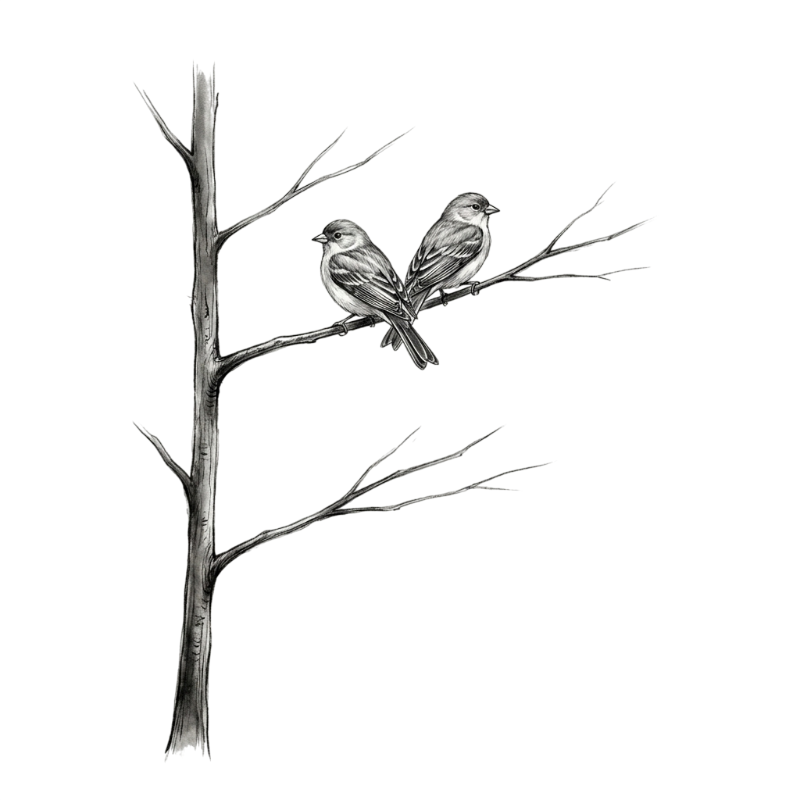

TODAY // 001
现在，
想做点什么？
写下三件事。一两件也行。
01
02
03
OR JOIN:

各自生长
彼此在场
每位用户单次栖息至多专注 3 项待办 // 每日累计时长上限 6 小时
Perch 相信：效率不是时间的堆砌，而是心流的自然发生。
无排名 · 零社交 · 不必表演努力
TODAY // 001
写下三件事。一两件也行。

每位用户单次栖息至多专注 3 项待办 // 每日累计时长上限 6 小时
Perch 相信：效率不是时间的堆砌，而是心流的自然发生。
无排名 · 零社交 · 不必表演努力